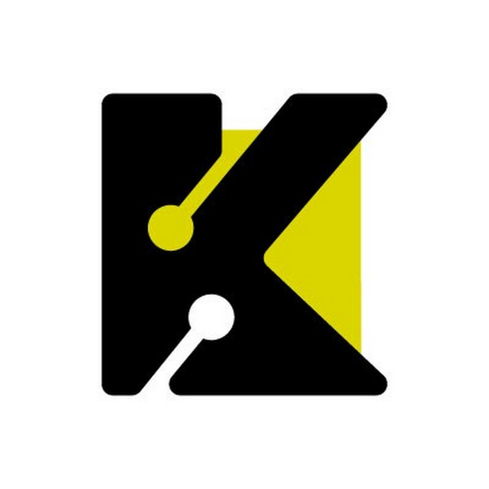
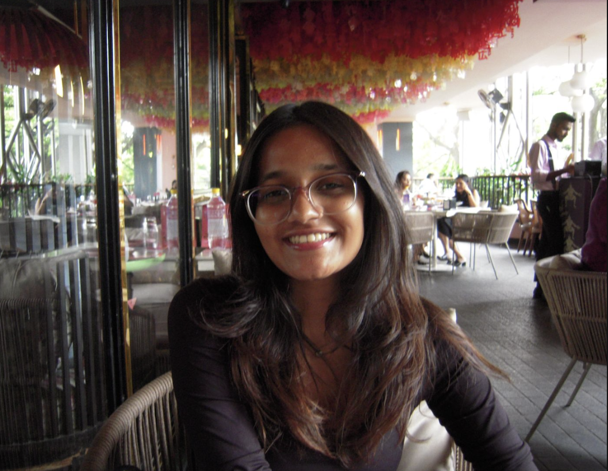

Internship Completion Letter
SDE · Data · ML
Aslesha MohantyFrom data to decisions — engineered end-to-end.
cse undergraduate with hands-on experience building end-to-end software systems, including data-intensive applications, backend apis, and intelligent ml-driven features. proficient in python, sql, and designing scalable data pipelines (etl), with a strong focus on applying machine learning techniques to solve real-world problems.
interested in applied data science, machine learning, and software engineering, with an emphasis on building intelligent systems, production-ready ai pipelines, and data-driven products where models and insights directly translate into measurable impact.
Right Now
Where I've Worked

Selected Work
Recognition
Research
Background
Credentials
The Person

Hi! I'm Aslesha, a CSE undergrad at Manipal Institue of Technology, building systems at the intersection of data engineering, machine learning, and backend. I love problem solving and I'm constantly asking "why" — breaking things down, understanding how things work, and building something better. I like finding patterns in everything, whether it's data, people, or everyday life.
Outside of academics, I play for the women's football team, and I'm usually either traveling, trying new food, or exploring fashion. I'm a bit of an avid planner — I enjoy organizing everything from work to trips and day-to-day plans while still appreciating spontaneity and adapting quickly when things change.
I work well under pressure, enjoy fast-paced environments, and like turning ideas into something real, quickly. I also enjoy long conversations over coffee, often diving into interesting (and sometimes completely random) topics just to think through different perspectives.
Currently based in Bengaluru, looking for opportunities in data science, ML engineering, and backend roles — or always up for a good conversation and some coffee!
Tools & Technologies